FIELD40
フエダの町
エンカウント率0%火山島グラデュアールの玄関口の港町。ダークオードが眠っているとされる“怒れる岩屋”を探して、町の人に話を聞いて回る。
名前 建物・場所→ ほかの FIELD へ1メインイベント1サブイベント
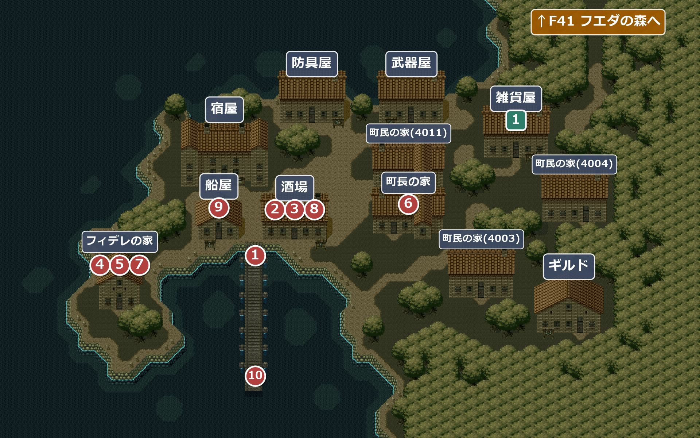
バグ町の南の男(X128 Y101)は、アイリスがパーティーにいないか確かめない。泥の町ホタでアイリスが抜けてから、イントラダで戻ってくるまでの間に話しかけても、いないはずのアイリスが「じゃあ、怒れる岩屋って聞いたことあります？」と喋る。
イベント
1
港町フエダ
場所: 桟橋の付け根(X84-88 Y85)
船で桟橋に着き、町へ入ると「《港町フエダ》」の表示。ここで“怒れる岩屋”について知っている者を探すことになる。
！町の人に聞くと、言い伝えに詳しいユルナル婆さんがいるが今は出かけている、と分かる。町長は怒れる岩屋を知らない。
次へ酒場へ(②)。
2
古い伝承話さなくても先へ進める
場所: 酒場(部屋4008)の男(X30 Y23)
怒れる岩屋のことを聞くと、心当たりは無いが、「この先危険」と道標に書かれた変な洞窟が近くにある、と教えてくれる。その辺りで猟師のトラビスが行方不明になったらしい。
話の流れとしてはここで洞窟のことを知るが、話を聞かずに洞窟へ行っても、そのまま先へ進める。
話の流れとしてはここで洞窟のことを知るが、話を聞かずに洞窟へ行っても、そのまま先へ進める。
！町民の家(4003)の町民によると、一番近い洞窟は町を出て北東。
次へ↑F41 フエダの森を通って、北東の洞窟へ。
F41 フエダの森から戻ってきたとき
3
洞窟の入口の魔法
場所: 酒場(部屋4008)の男(X30 Y23)
洞窟の入口にかかった魔法のことをアイリスが尋ねると、魔法にはユルナル婆さんが詳しいが町を出ているので、代わりに孫娘のフィデレに聞くとよいと教えてくれる。フィデレの家は町の南西の岬にある。
次へ南西の岬のフィデレの家へ(④)。
4
フィデレの護符
場所: フィデレの家(部屋4001)のフィデレ
入口に魔法がかかった洞窟が“怒れる岩屋”なのか聞くと、フィデレは「なんかそんな気もするなぁ…」と曖昧な返事。主人公の顔が気に入ったと、洞窟の魔法を防ぐ護符をくれる。
入手 フィデレの護符
フィデレの護符
！酒場の男に話を聞く前にフィデレの家を訪ねても、世間話に誘われるだけで何ももらえない。
次へ↑F41 フエダの森の②を通って、呪われた洞窟へ。
F42 呪われた洞窟から戻ってきたとき
5
捨てられた坑道
場所: フィデレの家(部屋4001)のフィデレ
呪われた洞窟は怒れる岩屋ではなかった。問い詰めると「後から思いだしてね★」——今度は“捨てられた坑道”ではないかと言う。坑道は道標に「この先危険！関係者以外立ち入り禁止」と出ていて、入口の鍵は町長が持っている。
次へ町長の家へ(⑥)。
6
坑道の鍵
場所: 町長の家(部屋4012)の町長
坑道の鍵を持っていると聞いて来たと話すと、崩れかけた危険な所だと心配しながらも、坑道の入口の鍵を渡してくれる。
入手 坑道の鍵
坑道の鍵
次へフエダの森を通って、↑F43 捨てられた坑道へ。
F43 捨てられた坑道から戻ってきたとき
7
ユルナル
場所: フィデレの家(部屋4001)のフィデレ
また間違っていたと知って、フィデレが今度は「旧火山島にある幻の…」と言いかけたところへ、祖母のユルナルが帰ってきて「フィデレ、コラ、嘘を教えるでない！！」。ユルナルによると、怒れる岩屋は島の内奥部にあり、道が入り組んでいるので案内人が要る。猟師のトラビスなら案内できるという——呪われた洞窟で助けたあの男だ。
次へ酒場のトラビスへ(⑧)。
8
トラビス
場所: 酒場(部屋4008)のトラビス(X18 Y15)
酒場にトラビスが来ている。怒れる岩屋への案内を頼むと、快く引き受けて仲間になり、道標ごとに道を教えてくれることになる。ライオネルはエスタンシアの町が心配だと、ここで抜ける。
加入トラビス
離脱ライオネル
！トラビスが酒場にいるのは、ユルナルの話を聞いた後から仲間にするまで。
バグトラビスに左側から話しかけると、主人公がいったんトラビスの右上へ回り込んでから、正面へ移動し直す。横・上から話しかけたときは右上を経由して正面へ回る作りで、経由する位置が右側に固定されているため、左側から話しかけると右へ大きく遠回りする。
次へ↑F41 フエダの森の③へ。トラビスの案内で島の奥へ。
F55 レイエンダの山道から戻ってきたとき
9
休火山島への船
場所: 船屋(部屋4002)の店員
100GOLD 払うと、休火山島への船を出してくれる。
！それまでは船屋で話しかけても、主人公が「まだここでの目的を達していないから…」と断る。
次へ桟橋の先へ(⑩)。
10
船出
場所: 桟橋の先(X84-88 Y129)
注意桟橋の先へ進むと船に乗り、フエダの町を含む火山島の場所すべてに戻れなくなる。やり残しが無いか確かめてから進むこと。
ばあちゃんの家に戻らないといけないフィデレとは、ここでお別れ。「ほんっと残念！ あんたをモノにしたかったけどなー」——さんざん振り回されたが、基本的に悪い娘ではなかった。やって来た船で休火山島へ向かう。音符ペンダント・フィデレの護符・橋の絵・袋に入った黒砂・シャベル・どろどろの玉が残っていれば、ここで無くなる。
離脱フィデレ
次へ船で休火山島のF60 港町マジョーレへ。
サブイベント
1
シャベル
場所: 雑貨屋(部屋4007)の男(X8 Y17)
「いいものを持っているんだが」と、10GOLD でシャベルを売ってくれる(1回だけ)。捨てられた坑道の埋もれた階段を掘り起こせるが、体力がだいぶ減る。坑道の宝箱の「袋に入った黒砂」でも通れるので、無くても先へ進める。
入手 シャベル
シャベル
部屋
！防具屋・武器屋・雑貨屋の3部屋は、中の作りがまったく同じ。船屋・町長の家・町民の家(3つ)の5部屋もまったく同じ作りで、フィデレの家もほぼ同じ作りになっている。
4008フエダの酒場
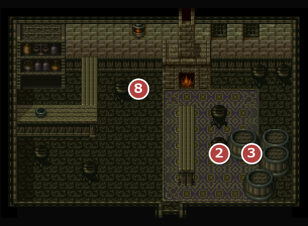
2古い伝承 3洞窟の入口の魔法 8トラビス
4001フエダのフィデレの家
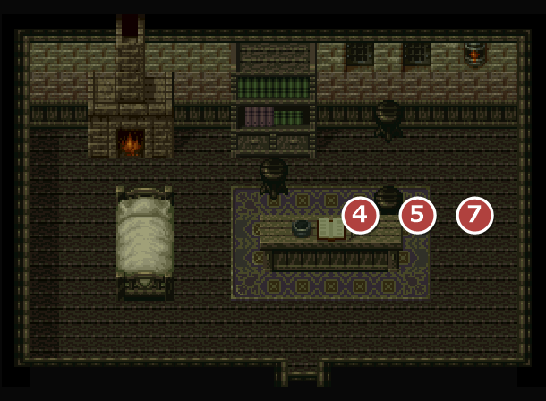
4フィデレの護符 5捨てられた坑道 7ユルナル
4012フエダの町長の家
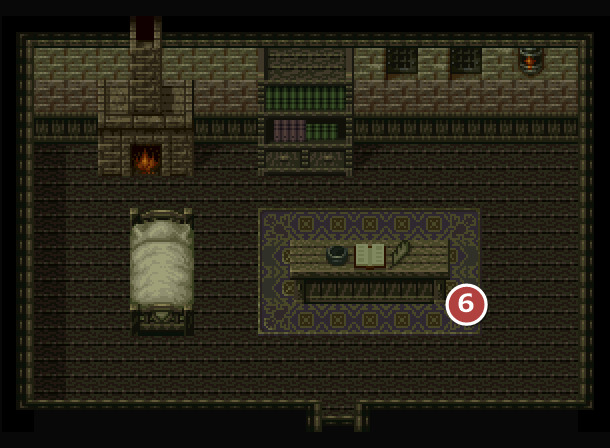
6坑道の鍵
4002フエダの船屋
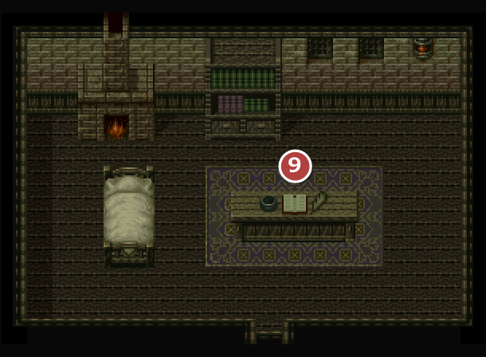
9休火山島への船
4007フエダの雑貨屋
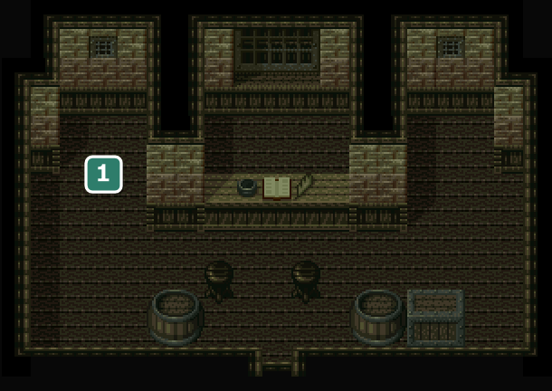
1シャベル
| 商品名 | 値段 | |
|---|---|---|
| 緑色の小ビン | 20 | |
| 朱色の小ビン | 30 | |
| のどぐすり | 15 | |
| スーパーのどあめ | 40 | |
| 聖水 | 20 | |
| しびれ薬 | 15 | |
4009フエダのギルド
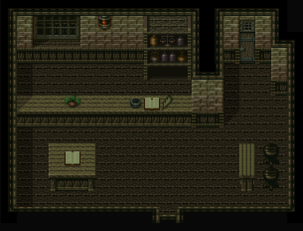
40104013フエダの宿屋・フエダの宿屋２Ｆ
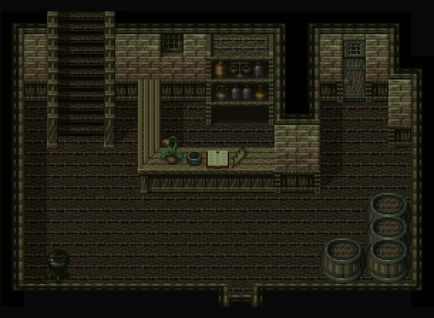
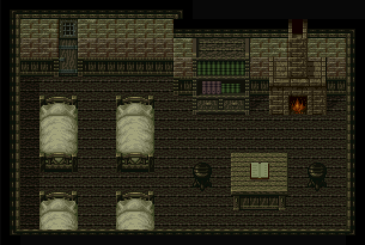
4010宿泊は1人 7GOLD。
4005フエダの防具屋
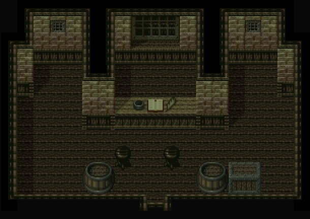
| 商品名 | 値段 | |
|---|---|---|
| モーンヘルム | 100 | |
| ゴールドブレスト | 180 | |
| ヒーターシールド | 100 | |
| ミドルブーツ | 30 | |
4006フエダの武器屋

| 商品名 | 値段 | |
|---|---|---|
| バトルナイフ | 160 | |
| クレイモア | 260 | |
| メイス | 200 | |
| 固い弓 | 200 | |
| 十字手裏剣 | 180 | |
4011フエダの町民の家

男から、フエダはこの島で一番安全な町で、内陸は危険らしい、という話が聞ける。
バグこの男は話すたびに2つの話を交互にするが、切り替えに使うフラグがドドルの塔の最上階の絵と同じ。この男と奇数回話してから塔へ行くと、最上階で倒れているはずのウルフが描かれない(見た目だけ)。
4003フエダの町民の家

町民から、沼地に住む泥族(人間族の亜種)の話と、町の近くの2つの洞窟の話が聞ける。
4004フエダの町民の家
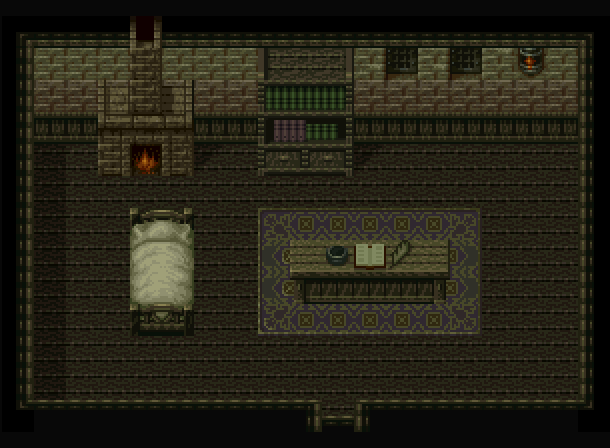
女から、内陸の町イントラダの人々がケンカをして、町が2つに分裂しているという話が聞ける。
没イベント情報
- 没町の住人の、普段の会話がディスク内に残されている … 町の住人3人は、伝承を尋ねる会話の後に普段の会話を持っているが、普段の会話に切り替えるフラグを立てる所がどこにも無いため、毎回「この土地の事とか、古い伝承とかに詳しい人はいませんか？」の会話になる。酒場の男(②)にも、同じフラグで分かれる空の分岐が残っている町の中ほどの女(X106 Y61)女「さあて、お仕事しなくっちゃ！ いつまでもボヤボヤしてはいられないよ！」町の南の男(X128 Y101)男「このへんにはいくつか怪奇な場所があるんだぞ。知ってるかい？ 不気味な洞窟とかね…」雑貨屋の南の男(X168 Y67)男「あんた、トラビスって男知らないかい…知り合いの猟師なんだが、姿が見えねぇ」「この季節、獲物は少ないはずなんだがな…どこに行ったんだか」